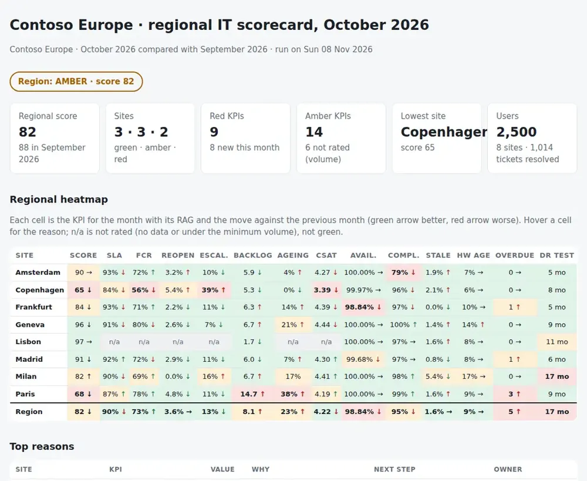

An office lost its only local engineer and, the next month, first-contact resolution fell from 79% to 56%, escalations to the central team went from 14% to 39% and satisfaction from 4.5 to 3.4. That is what the multi-site IT scorecard published with this post finds. It is a tool that runs on demo data from a made-up company with 2,500 people in eight European offices, reporting October against September with the problems placed on purpose: the region amber, two offices red, nine red KPIs and six not rated.
A regional IT lead gets the same question every month: how is IT doing at each office, which one is slipping and why. The numbers live in five places and on their own they rarely tell the story. The tool gives every KPI a red, amber or green status against its target, the trend against the previous month and, for every red, the reason found in the data, such as an office with no local IT staff. The reason sits next to the red, so the review does not spend its time looking for it.
A backup circuit down for almost nine hours that nobody noticed
The backup circuit of one office was down twice for almost nine hours in the month and nobody noticed, because the primary stayed up. It is the outage nobody reports and the one that matters on the day the primary fails. Availability is computed from the outage events of the monitoring tool, unplanned minutes over the minutes in the month, against a target per service, because a backup circuit and a printer do not deserve the same one.
A fifth of another office's laptops fell out of compliance the week a new Windows 11 build reached them, and the scorecard shows that build as the reason. Device KPIs use the last Intune snapshot of each month: compliance, devices that stopped checking in and hardware older than four years.
Eight tickets are too few to rate
The smallest office has eight tickets, and an SLA percentage on eight tickets is green or red by chance. Under its minimum volume a KPI is not rated, and not rated is never shown as green. A small office is scored on what it has, its backlog, availability, devices and DR test, and its few tickets are read one by one.
One office has not tested its DR plan, the plan for recovering from a disaster, for seventeen months. The busiest office has 91 open tickets, 35 of them older than 30 days. For the service desk the scorecard tracks SLA by priority, first-contact resolution, reopen and escalation rates, backlog per 100 users and its ageing, and satisfaction.
How the score is built
Every KPI is computed per office and month from the raw exports, the same way for both months, so the trend is not a number someone typed. The site score is the weighted share of points over the rated KPIs, and a site with a red is never green. The regional row pools tickets and devices but takes the worst office for availability, actions and DR tests, so it never averages one office's outage away.
How to use it with real data
The repository includes a read-only PowerShell exporter for Intune through Microsoft Graph and for Jira Service Management through its REST API, and runs on Python with only the standard library. It produces a web report with a heatmap of offices by KPI, a pack for the regional review with one section per office and a decision column, and CSV files with the scorecard, the detail per KPI, the trend, the findings and the actions. It comes with 14 tests and a runbook covering the review agenda, what to do with each red, how to set targets and how to keep the KPIs from being gamed. The service desk KPIs published at the start of the series look at one desk; this puts the offices side by side. The company and its offices are fictional.
Where it comes from
The tool comes from leading the IT of one office with two engineers at a multi-site financial services company, supporting around 2,500 users across European offices, in an office that grew from about 15 to over 120 people, and from defining SLAs and OLAs and running availability and capacity management. The lesson I keep: a scorecard is for deciding where to help, not for ranking people.
Want to bring it to your environment or adapt it to your case? Get in touch and we can look at it together.
Tech Career Lab · newsletter
Found this useful? Every two weeks I send one practical idea for IT professionals: LinkedIn, projects, networking and hiring processes.
Sign up and get the 33 ideas →